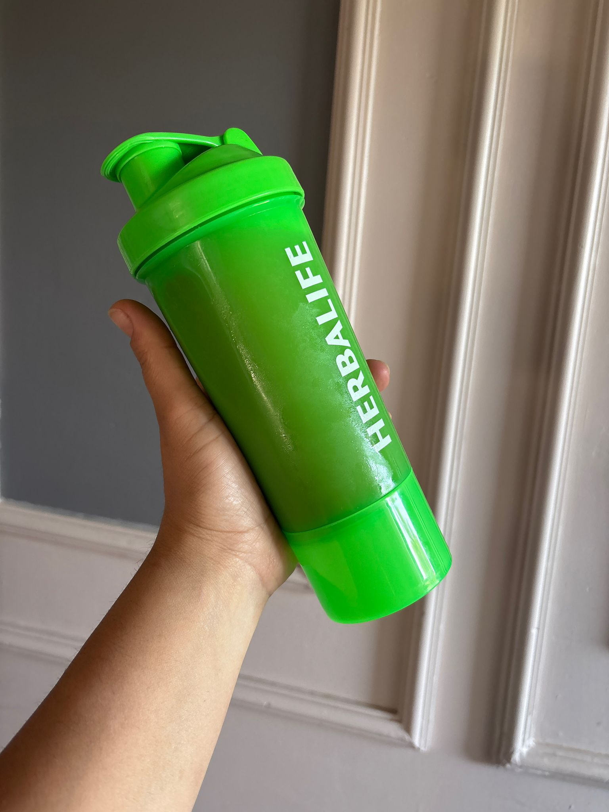

Beslenme Koçu Bilge Yüre Büyükkaplan
Popüler Ürünlerimiz

Herbalife Usülü Çay
Çayımız Herbalife usülü aroması güzel bir çaydır.
Sheak
Sheak'imiz mükemmel tadıyla öğün yerine kullanılabilir.
İletişim
Telefon:+90 0(533) 154 98 70
Email: yurebilge3535@gmail.com
İnstagram Hesabı: İnstagram bağlantımıza gidin
Hakkımızda
Bilge Yüre Büyükkaplan, sağlıklı yaşamın öncüsü, bilimsel ve doğal beslenme konusunda uzman bir danışmandır. Kişisel hedeflere özel programlar sunar. Ayrıca kendisi Herbalife ürünleri satarak bir girişimde bulundu. Kendisi ile iletişime geçmek için iletişim bölümünü inceleyiniz.